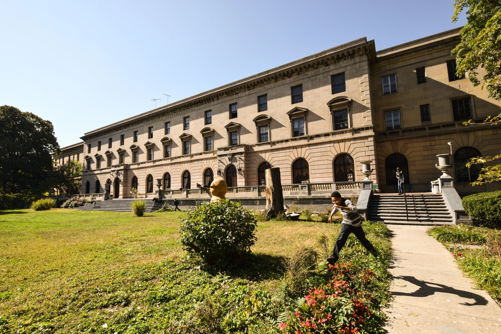

The Andrew Freedman Home at 1125 Grand Concourse opened in 1924 and later became a setting for arts and community activities.
The Andrew Freedman Home is the kind of building that can interrupt a walk. Set back from the Grand Concourse at number 1125, its broad facade and lawn feel different from the street around them. You can appreciate the architecture in passing, but the place becomes more interesting when you know a little of the story behind it.
Opened in 1924, the home was created with an unusual purpose: housing older people who had once been wealthy and then lost their money. Its later life has included services for older residents, arts activity, exhibitions and community uses. It became a New York City landmark in 1992.
That combination of a surprising past and a changing present makes it a worthwhile subject for a Bronx afternoon. The best way to approach it is through a confirmed public program, with time left over to notice the building and the Grand Concourse around it.
A building with an unexpected beginning
Many charitable institutions were founded to help people who had always struggled financially. Andrew Freedman’s idea was more particular. His bequest supported a home for people accustomed to comfortable circumstances who could no longer afford them.
The building opened after his death, and its scale reflected that ambition. It offered a setting quite unlike the image most people have of a retirement residence. The original idea also leaves a visitor with an interesting question: why should the experience of losing wealth shape the kind of help a person receives?
You don’t have to settle that question to find the history compelling. It gives the architecture a human story and connects an impressive building with anxieties about aging, status and financial security that remain recognizable today.
Look at the whole setting
Start by noticing the relationship between the building and the street. The setback creates a different sense of space from the apartment buildings and storefronts lining much of the Concourse. The lawn gives you room to take in the width of the facade rather than seeing only a doorway as you pass.
Then look for the repeated elements: windows, entrances and the rhythm of the exterior. You don’t need to identify an architectural style correctly to enjoy how a building is put together. Ask yourself where your attention goes first and what changes as you move along the sidewalk.
Stay in areas open to the public. An attractive lawn or doorway isn’t automatically an invitation to enter every part of the property. You can make a satisfying architectural stop without assuming the entire building is available for casual exploration.
How art changes the experience of a place
The home’s arts history includes exhibitions, installations and artist activity. One significant example was This Side of Paradise, presented by No Longer Empty in 2012. Artists responded to the building and its history, bringing contemporary work into a setting with a very different original purpose.
That kind of pairing can make both the artwork and the room more noticeable. A piece about memory feels different in a building already full of it. An installation can draw attention to a window, a corridor or a feature you might otherwise overlook.
Past exhibitions are part of the home’s history, not a promise about what is on view today. For a current visit, choose a specific public event or exhibition and confirm its arrangements. That gives you a clear reason to arrive and a better idea of which spaces you’ll be able to see.
Pick a program that suits your curiosity
A literary gathering, a workshop and an exhibition opening offer different experiences. If you want time to look quietly, an ordinary exhibition visit may suit you better than a busy reception. If you want conversation, a discussion or participatory program may be the stronger choice.
Read the practical details as carefully as the title. Look for the room, the start time, whether there is a charge and whether registration is required. A historic arts venue can host several kinds of activity without every event following the same rules.
For a workshop, find out whether materials are included and whether beginners are welcome. For a reading, ask about seating and the approximate ending time. These aren’t fussy questions. They help you choose a visit you’ll actually enjoy.
Make the Grand Concourse part of the afternoon
The Bronx Museum is another cultural anchor on the Grand Concourse, at 1040. The two institutions can give an outing a useful focus: historic architecture at one stop and contemporary art at another.
Timing matters this fall. The museum is closed September 7 through October 8 for an exhibition changeover, with a fall opening on October 9 at 6 p.m. During the closure, treat the Freedman Home visit as its own plan rather than promising friends a two-venue afternoon.
Once both schedules work, resist the temptation to hurry through each place just to say you visited both. Choose a main stop and leave the second as an option. The Concourse rewards attention to the street itself, not only the destinations on your list.
A good place to bring a curious friend
Some people love buildings. Others need a story before they become interested in architecture. The Andrew Freedman Home gives you both: a striking exterior and a beginning unusual enough to start a conversation.
Tell your friend the basic history before you arrive, then let each person notice different things. One might be interested in the social purpose of the home; another might focus on how an old building can take on new uses. You don’t have to agree on which part is most interesting.
Keep the conversation grounded in what you can see and what you know. It’s easy to make a historic place more dramatic by filling in details, but the real history is already distinctive. Questions are more useful than invented stories about the people who once lived there.
Accessibility and event-day details
For any public program, ask about the entrance and the room being used. Access to one area of a historic property doesn’t necessarily describe the whole building. If stairs, seating or restrooms affect your plans, make the question specific.
Allow time to find the correct entrance, especially for an evening event. An address gets you to the property; the event instructions should tell you where to go next. Keep the organizer’s contact information available in case the meeting point is unclear.
Photography arrangements may differ between the exterior, an exhibition and a private event. Ask before photographing artwork or people. You can enjoy the building without turning every part of the visit into something to record.
Why it belongs on a Bronx culture list
The Andrew Freedman Home brings several Bronx stories together: the Grand Concourse, the reuse of historic buildings and the space artists and communities need to gather. It is interesting because of those layers, not because it fits a fashionable label.
Choose a real public program, give yourself time to notice the setting and leave with one question you want to explore further. For a building that began with such a particular vision of who deserved a home, its changing place in the borough offers plenty to think about on the walk back.
Further reading
See current visitor information, event details and public guidance below.